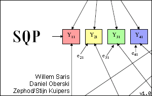

Survey Quality Prediction |  |
SQP is a Survey Quality Prediction programme developed by Prof. Dr. Willem Saris (ESADE Barcelona, Spain), Dr. Irmtraud Gallhofer, and Dr. William van der Veld (University of Amsterdam, The Netherlands), and written by Daniel Oberski and Stijn Kuijpers.
A book about survey quality prediction and correction was published at Wiley. It also contains the codebook for the classification of survey questions for SQP.
The current beta version of the programme is distributed free of charge. Only Windows is supported, although the programme has been succesfully used under Linux, Mac OS X or BSD via the Wine compatibility layer.
For more information, please contact prof. Willem Saris
A short demonstration video can be viewed here: